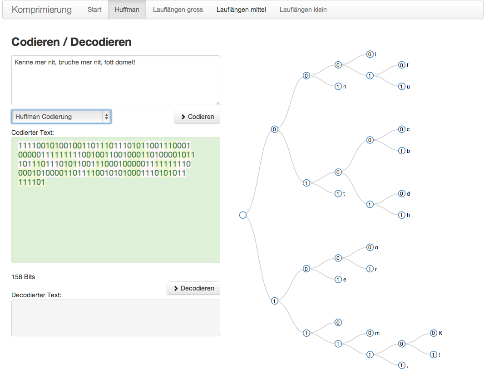

Beispiele für den Schulunterricht
This project is maintained by mgje
Ein interaktives Experiment zur Huffman-Codierung finden Sie dem folgenden Link. Eine Demonstration zur Lauflängen-Codierung finden Sie unter dem diesem Link.
Die interaktiven Experimente sind nicht in allen Browserversionen getestet. Rückmeldungen und Wünsche werden gerne aufgenommen. Vielen Dank für das Testen Martin Guggisberg (@mgje)